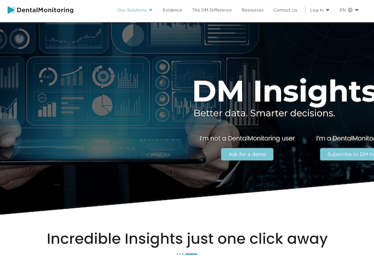
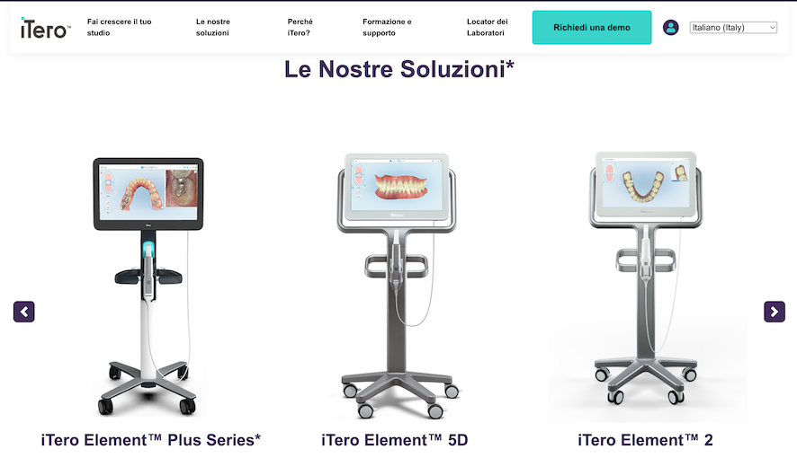
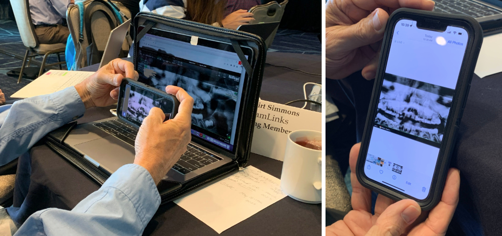
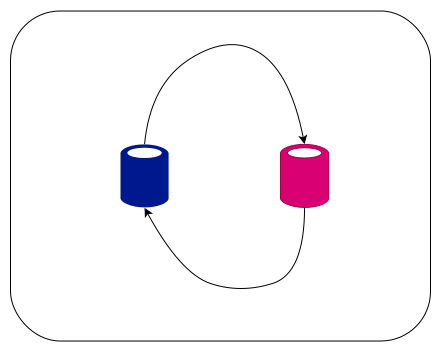
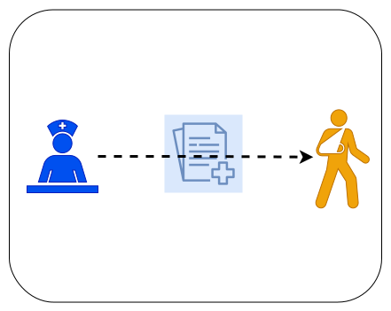

Where is the Export-All Button?
How to reclaim control of your patient's data
toni magni, BME - afm@case.edu
Why am I here? What are my objectives?
- You have limited control over your patients data.
- Open Standards-based Interoperability.
- What to look for when purchasing new software.
- Bring the orthodontic domain to a point where doctors and vendors would say: "DICOM and HL7? Why? didn't it always exist?"
Who Owns Clinical Data?
- The first legal owner of the clinical datum is the patient.
- Misconception 1: Medical providers might think they own it because they paid for the equipment and they did all the work to collect it. Yes, but who paid for that work to collect it?
- Misconception 2: Software vendors might think that they own it, because they have physical control over it.
Who Really Owns Clinical Data?
It's actually a heritage of humanity.
- Humanity: The patients are human →
- Humans are a social species of living beings →
- all living have one thing in common: they want to eliminate suffering →
- poor health and physical pain very often lead to an increase of suffering →
- the human is very interested in staying healthy →
- always improving healthcare system →
- publications, scientific research
- CLINCAL DATA
What is the Problem?
What is the Problem?
How do you share the data?
Problem 1

What is the Problem?
What's wrong with sharing data this way?
What is the Problem?
What's wrong with sharing data this way?
- Efficiency: procedure is extremely inefficient
- Security: clinical data on device not controlled by medical institution, maintainer of the data.
- Privacy: some friend of family member might look at your phone and find sensitive data they are not supposed to see, while simply scrolling through photos.
- Accuracy: procedure is error prone, it is very easy to send the wrong patient to the wrong person.
How to connect systems together?
Problem 2

How to transition to new systems?
Problem 3

Patients waiting for their turn to re-register after the department switched from Windent to AxiUm.
Research
Problem 4
Research
Problem 4
- Today's research is embarrassingly based on a tiny fraction of our population (< 100 patients)
- A large fraction of orthodontic patient data is siloed behind the local network of the orthdontic practice, and their closed orthodontic software.
- We have the technology (AI, Big Data, Cloud, High Speed Internet) make all this data accessible to research.to bump up sample size by at least 2-3 orders of magnitude.
- This could potentially bump up sample size by at least 2-3 orders of magnitude.
Data Conversion Wasted Resources
Problem 5
Data Conversion Wasted Resources
Problem 5
- A lot of time and resources spend for data conversion (import and export)
- Data conversion is a tedious repetitive process: developers keep reverse engineering and don't share their work.
Data to Patient
Problem 6
Data to Patient
Problem 6
- Awareness of data ownership is growing and governments are adding regulations (21st Century Cures Act, Information Blocking, GDPR)
- How? Doctors don't know how to give patients their data.
- Lawsuits will probably come soon.
How can we solve the problems?
We develop the perfect software.
We make use of standards.
Humans and Standards
Humans have a history of making significant progress by adopting standards.
Language/Alphabet
Measuring things (SI Units)
Tire Codes (ISO-83.160.10)
Containers, Rail Track Gauge
{kind=link}
RCA Sound Tape Cartridge, Elcaset, Compact Cassette
{kind=link}
{kind=link}
{kind=link}
Wall Socket (NEMA 1-15, NEMA 5-15)
Screws (ASME-B1, ISO-68,261,262,724,725
TCP/IP Networking (the Internet), Email, SMS
No Standards: Nintendo, Xbox, Playstation, ...
Tesla Open Source Patents
...

Strategic Plan of the Past
Attempts have been made in the past, but they failed. Why?
- We have used closed interoperability
- Fear of losing customers
- It's work to follow standards
- No request from customers
- Lack of Information
Master Plan


How would the future look like?
What can you do?
- Start Now! Set up your own PACS Imaging Server.
- Ask your IT and software vendors about implementing open-standards based solutions. Question high prices.
- Keep your eyes pealed, keep informed.
Ask you software's support these questions
Find out if you really have control over your data.
- The day I decide to move to a different software product, what will the process to export my data and import it into the new software be?
- I would like to use Software B to send out my email reminders. Can you please ensure the two software products can share data both ways?
Disclosure
open-ortho.org